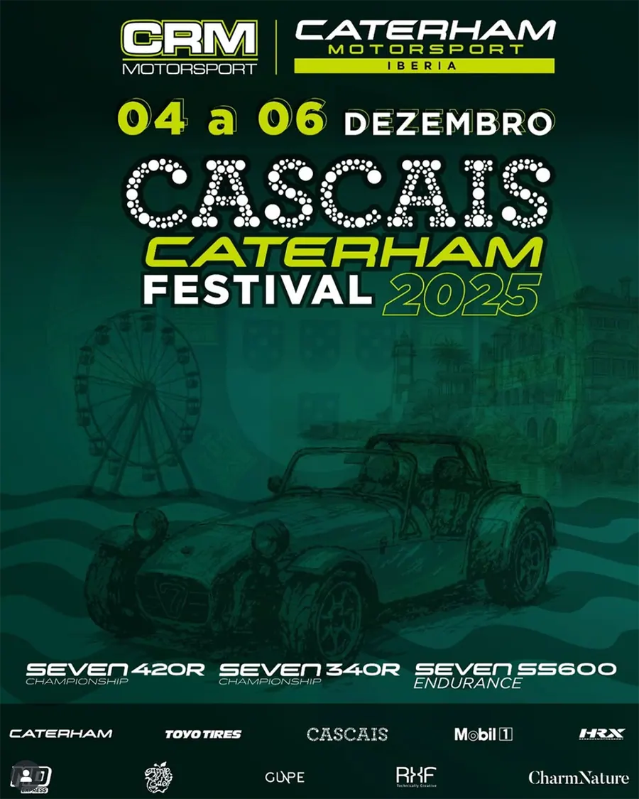
Caterham Festival fecha época 2025 O último evento da época 2025 no traçado do Estoril fica a cargo da CRM Motorsport com a realização do Caterham Festival. Com várias…Notícias e reportagens
Notícias
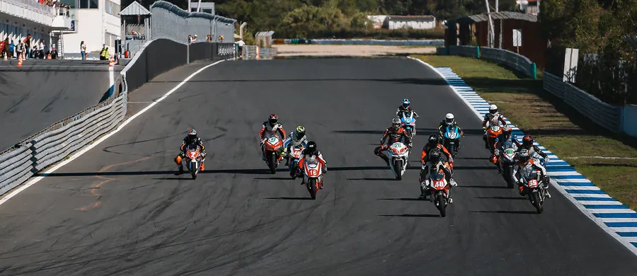
ESTORIL CNV#4 – Último dia competitivo da época 2025 do CNV ESTORIL CNV#4 – Último dia competitivo da época 2025 do CNV FOTO: André Kezman Ferreira Amanhecer do último dia competitivo do Campeonato…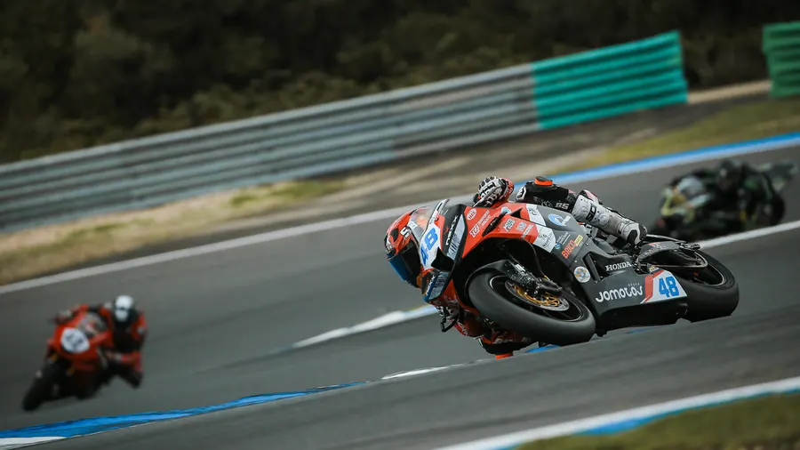
ESTORIL CNV#4 – Chuva para fechar a época 2025 do CNV Condições climatéricas complicadas com muito nevoeiro e chuva no Circuito Estoril a servirem de cenário para o encerramento da temporada…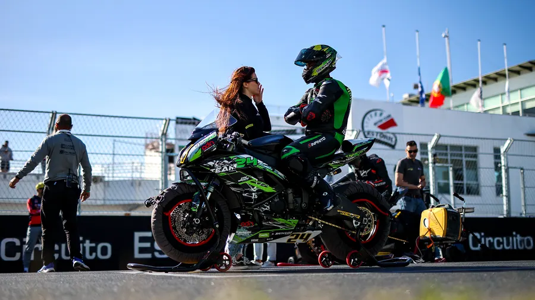
CNV fecha época no Estoril O Circuito do Estoril IV marca este fim de semana o encerramento do Campeonato Nacional de Velocidade 2025, com vários títulos ainda por…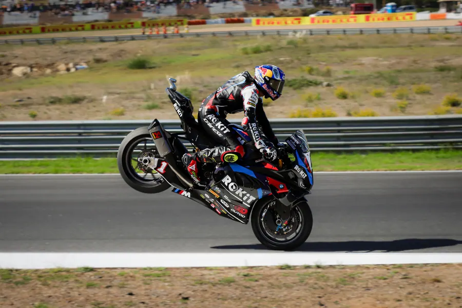
Razgatlioglu reforça a liderança no mundial com vitória na Corrida 1 WorldSBK – Circuito Estoril Foto: WHISPER Razgatlioglu reforça a liderança com vitória na Corrida 1 Com cinco corridas restantes, Toprak…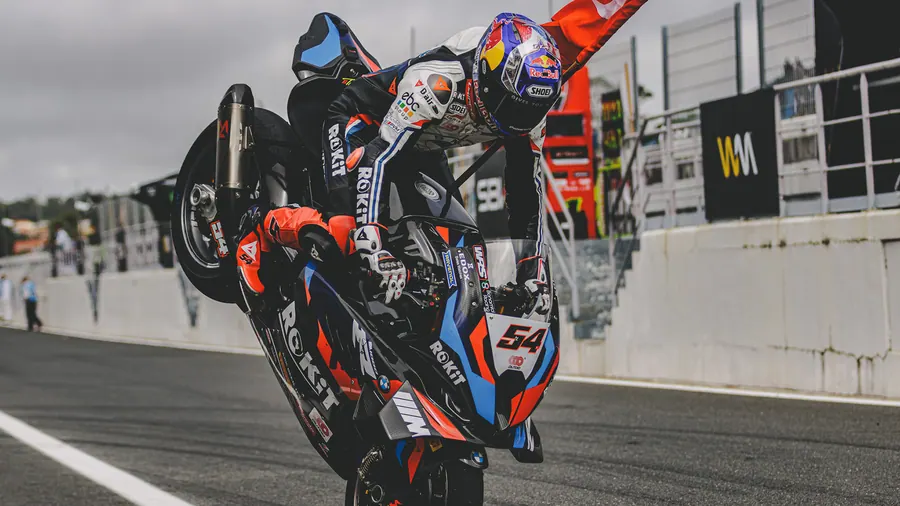
WorldSBK… 10 a 12 Outubro O evento mais aguardado de 2025 pelos entusiastas e amantes da velocidade em duas rodas – WORLDSBK – regressa nos dias 10 a 12 de Outubro…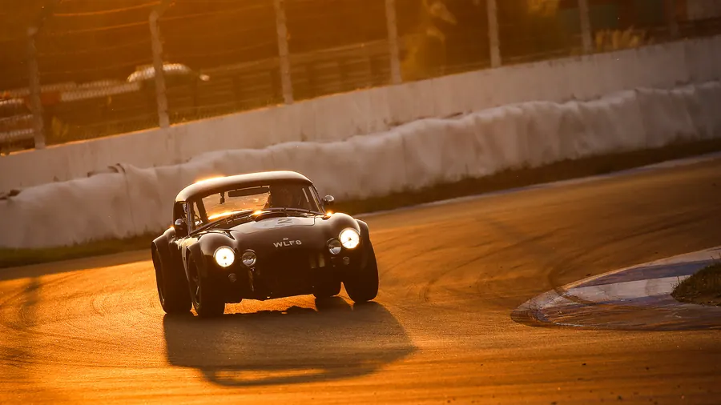
Estoril Classics – Bilhetes já à venda! Já estão disponíveis os bilhetes para a edição ESTORIL CLASSICS 2025 que regressa ao Circuito Estoril nos dias 4 e 5 de Outubro. A promoção…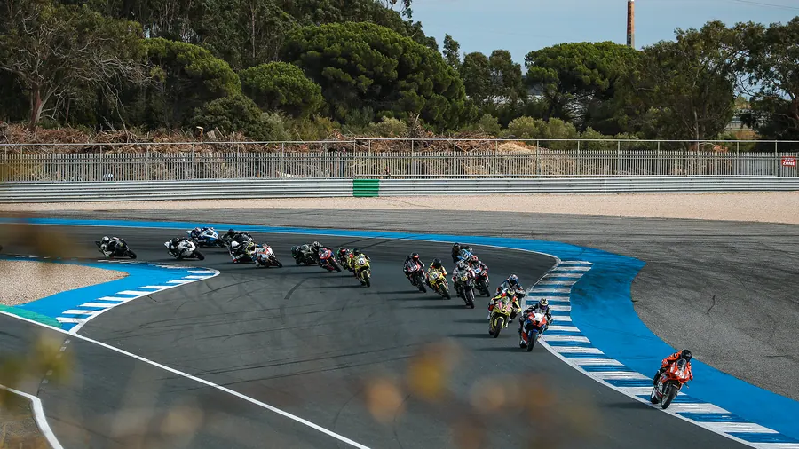
ESTORIL CNV#3 – O arranque da segunda fase da temporada. ESTORIL CNV#3 – O arranque da segunda fase da temporada. Nos dias 06/07 de Setembro o traçado o Estoril volta a ser o palco para o regresso…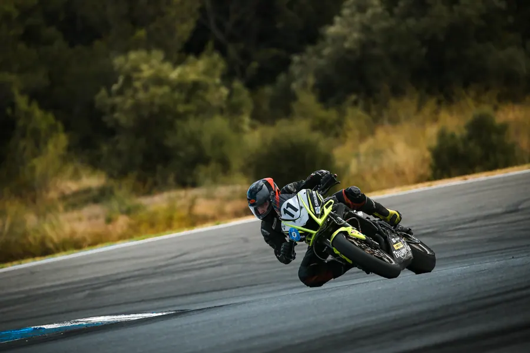
ESTORIL CNV#3 – Domingo de Campeões no Estoril ESTORIL CNV#3 – Domingo de Campeões no Estoril Finalizado o primeiro dia de competição do regresso do Campeonato Nacional de Velocidade…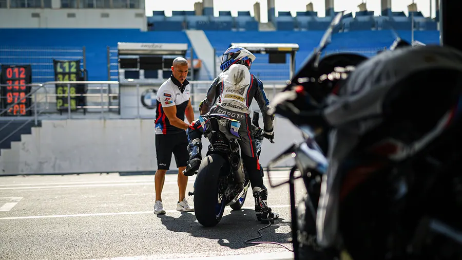
ESBK – Campeonato de Espanha de Superbikes Nos dias 13 e 14 de Setembro, o ESBK… Está de regresso ao Estoril. Aquele que é considerado como um dos mais competitivos campeonatos da…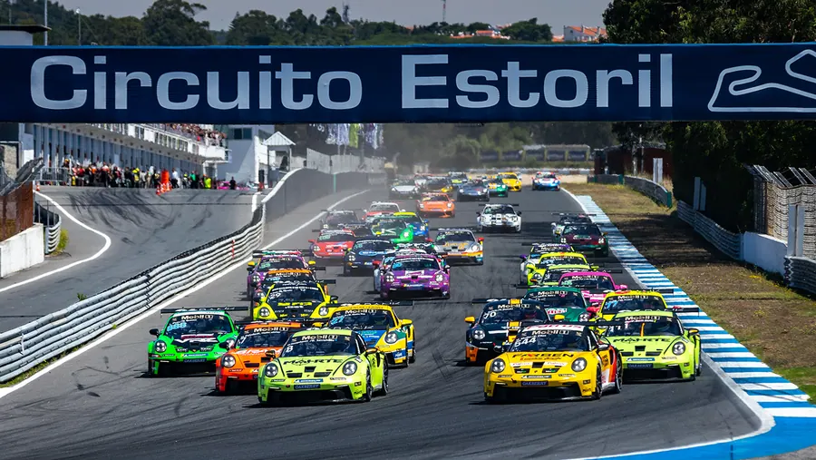
Porsche Cup C6 Bank tem a semana mais intensa do calendário 2025 no Circuito Estoril O Circuito Estoril recebe quatro corridas Sprint nos dias 28/29 Agosto e a Endurance no Domingo, 31 Agosto. A especialíssima temporada do…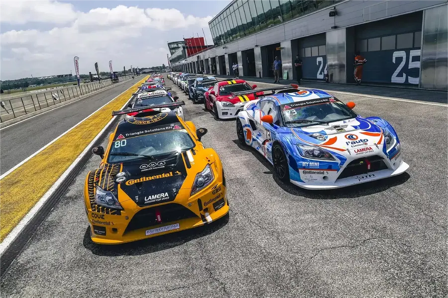
Lamera Cup – o regresso das provas de “resistência” ao Estoril De 06 a 08 de junho, o Circuito Estoril recebe as 11H D’ Estoril Lamera Cup. Uma das mais conceituadas provas de resistência da atualidade…